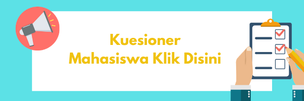

WAKTU
Server: Tue 9:44:13
NAVIGATION

Klik Disini
Papan Pengumuman
| Kuesioner E4.0 untuk Dosen dan Mahasiswa
by Admin E-Learning - Tuesday, 20 October 2020, 10:20 PM |
|
|
Ayo berpartisipasi untuk mengisi kuesioner mengenai E4.0 ini agar menjadi lebih baik ke depannya.
Klik salah satu gambar untuk memulai melakukan pengisian kuesioner, klik dosen untuk dosen dan klik mahasiswa untuk mahasiswa. Cukup 1 (satu) kali setiap orang untuk melakukan pengisian kuesioner ini. Terima kasih. Salam bela negara!!! |
|

 |
|
| Permalink
View the discussion (0 replies so far) |